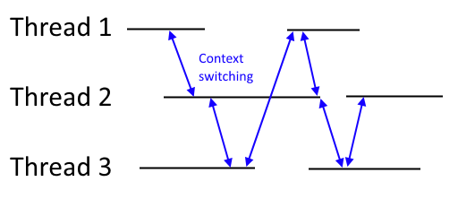
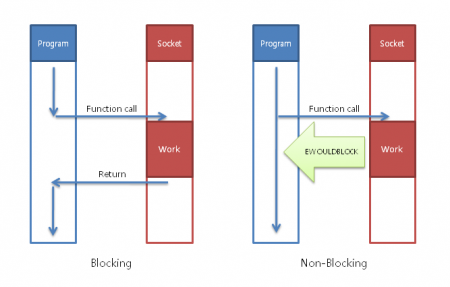
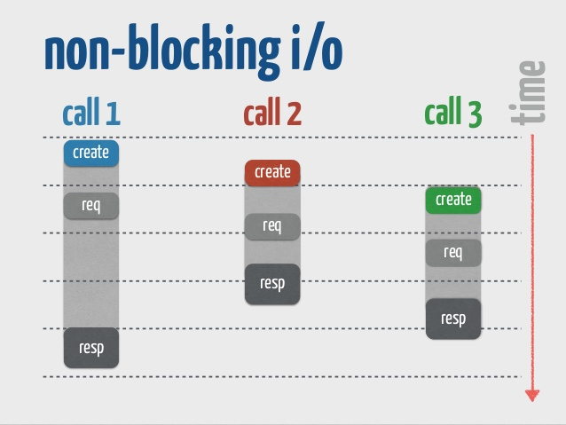
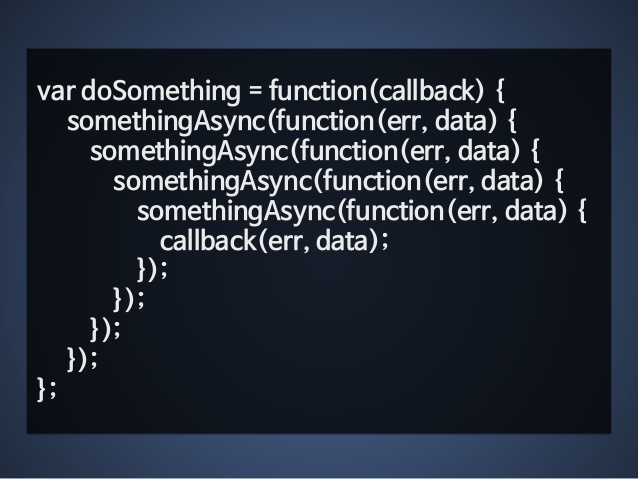
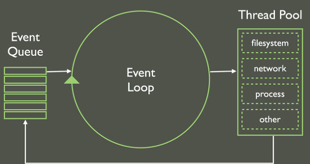
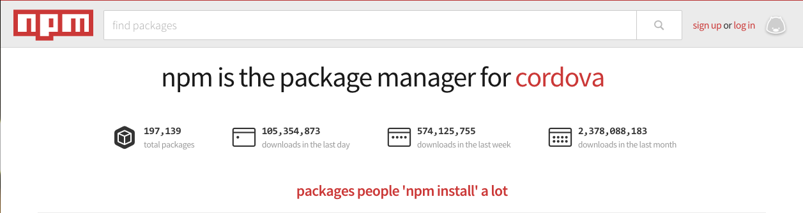
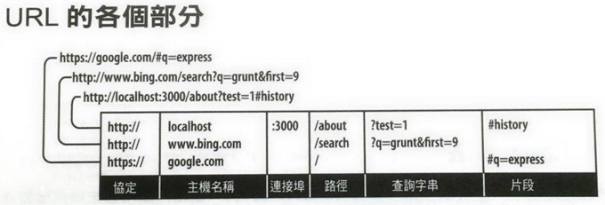
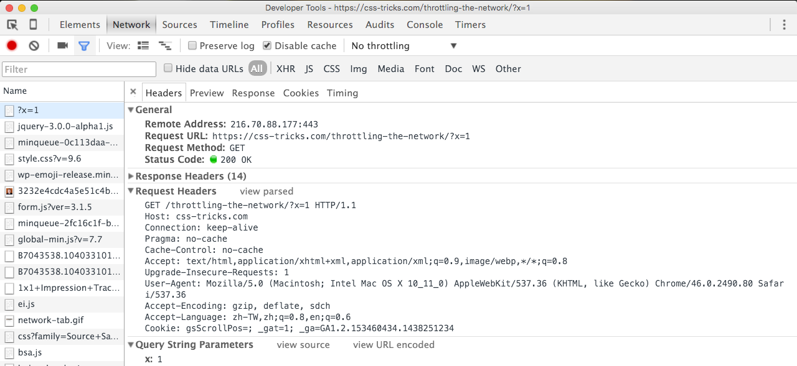

Web Hackthon Seminar
5
node/npm/http/express
Ryan Dahl

他最初的目標是尋找一個適合實作 non-blocking 的語言
因為 JavaScript 有 Event Driven 的特性
又剛好有 Google Open Source 的 V8 引擎
所以最後就選擇了 JavaScript
並在 2009 年做出了 Open Source 的 nodejs
Non-blocking I/O
多執行緒的程式
Context Switch 會有多餘的資源消耗
node 是單執行緒 non-blocking
不需要等 I/O
- 肉片退冰：25 mins
- 電鍋煮飯：40 mins
- 寫作業：45 mins
I/O - 肉片退冰, 電鍋煮飯
Calculation - 寫作業
Blocking: 110 mins
Non-Blocking: 45+ mins
可以多個任務一起執行
不過非同步的程式比較難寫一點..
Callback Hell
解決方案
- Promise
- Generator (Coroutines)
- Async Await
想要搞清楚建議看 深入淺出 nodejs chapter 4
Event Loop
每執行一次事件迴圈稱作 tick
- 單執行緒
- 當下 tick 發生的事件 callback 都會放到下一 tick
- 避免 blocking 與一次進行大量的操作
// 0 秒後執行
setTimeout(function() {
console.log('2');
}, 0);
console.log('1');
element.addEventListener('click', function() {
console.log('click'); // can't be invoked
});
// 或是其他超煩重複雜計算，會讓程式其他 handler 類似當機
while (true) {
// blocking
}
想要搞清楚建議看 深入淺出 nodejs chapter 3
V8
就是 Chrome 裡面的 JavaScript 引擎..
libuv: C 寫的跨平非同步函式庫
CommonJS
2009 年開始
因為 JavaScript 沒有 Standard Library
所以希望有個規範來統一瀏覽器外的 Ecosystem
例如：模組、檔案讀寫等等
不過現在比較為人所知的只剩模組規範
每個 module 會有兩個重要的變數注入進來
require, module
require 用來載入模組
module 用來匯出模組
詳細的介紹可以看 這裡
內建 module
built-in module - http
var http = require('http');
http.createServer(function (req, res) {
res.writeHead(200, {'Content-Type': 'text/plain'});
res.end('Hello World\n');
}).listen(1337, "127.0.0.1");
console.log('Server running at http://127.0.0.1:1337/');
built-in module - fs
var fs = require('fs');
fs.writeFile('hello.txt', 'Hello World!', function(err) {
if (err) return console.log(err);
console.log('Hello World > helloworld.txt');
})
var fs = require('fs');
fs.readFile('hello.txt', 'utf8', function(err, content) {
if (err) return console.log(err);
console.log(content);
})
node style callback
第一個參數都是 error
練習
自己寫 module
用 module.exports 匯出即可
// 匯出數字
module.exports = 1;// 匯出字串
module.exports = 'a module';// 匯出函數
module.exports = function() {};// 匯出物件
module.exports = {
a: 'test',
myMethod: function() {}
};用 require 搭配路徑載入
// 相對路徑：同層目錄
var MessageItem = require('./MessageItem')// 相對路徑：外層目錄
var MessageItem = require('../MessageItem')// 相對路徑：同層的 src 目錄裡面
var MessageItem = require('./src/MessageItem')練習
CommonJS module
on front-end
browser 裡面不能直接使用 require
必須使用 webpack, browserify 之類的 tool
下禮拜才會教
ES2015 module
import fs from 'fs';
import { a } from './b';
export const c = 'c';
export default function()
在 v8 支援前只能先用 babel compile
npm

總不能叫同伴一個個照版本載回來吧..
另一個原因..
第一個禮拜的投影片
(一個月前)

現在
居然又多了一萬個 module!!!
開新專案
npm init可以產生一個新的 package.json
安裝第三方 module
npm install --save module-name安裝為依賴套件放進 package.json
npm install --save-dev module-name安裝為開發用依賴套件放進 package.json
npm install -g module-name安裝在全域、通常是指令列工具
接下來就能用 require 直接載入第三方 module
// 直接是模組名稱
var assign = require('object-assign')package.json
main - module 進入點，如果沒有就是 index.js
dependencies - 依賴套件
devDependencies - 開發用依賴套件
scripts - 可以用 npm run xxx 執行的腳本
Demo React
HTTP
HyperText Transfer Protocol
超文本傳輸協定
HTTP Client 跟 Server 之間進行請求與回應的標準
2015/5 發表了 HTTP/2
現行主要版本還是 1.1
// 一個範例
Request:
GET / HTTP/1.1
Host: www.google.com
Response:
HTTP/1.1 200 OK
Content-Length: 3059
Server: GWS/2.0
Date: Sat, 11 Jan 2003 02:44:04 GMT
Content-Type: text/html
Cache-control: private
Set-Cookie: PREF=ID=73d4aef52e57bae9:TM=1042253044:LM=1042253044:S=SMCc_HRPCQiqy
X9j; expires=Sun, 17-Jan-2038 19:14:07 GMT; path=/; domain=.google.com
Connection: keep-alive
Request
GET / HTTP/1.1
Host: www.google.com
一個基本的請求至少會有
- Method 方法
- Path 路徑
- Host 主機
path 複雜一點的範例
GET /posts/21?type=detail HTTP/1.1
Host: www.example.comHost
- Domain name: google.com
- IP: 64.233.189.94
- 也可以有 Port: localhost:3000
Method
常見的：
- GET - 用於取得資源
- POST - 用於新增資源
- PUT - 用於更新資源
- DELETE - 用於刪除資源
URL
有一些標準的溝通屬性可以設定在 header
Request Body
- Get 請求沒有夾帶 body
- Post 請求可以夾帶 body
POST /posts HTTP/1.1
Host: www.example.com
Content-Type: application/x-www-form-urlencoded
title=new-post&description=xxxxxx
告知後台 Content-Type，後台的框架通常才能正確處理
Content-Type
- text/plain
- application/x-www-form-urlencode
- multipart/form-data
- application/json
Response
HTTP/1.1 200 OK
Content-Length: 3059
Server: GWS/2.0
Date: Sat, 11 Jan 2003 02:44:04 GMT
Content-Type: text/html
Cache-control: private
Set-Cookie: PREF=ID=73d4aef52e57bae9:TM=1042253044:LM=1042253044:S=SMCc_HRPCQiqy
X9j; expires=Sun, 17-Jan-2038 19:14:07 GMT; path=/; domain=.google.com
Connection: keep-alive
<!DOCTYPE html>
....
一個基本的回應至少會有
- Status Code 狀態碼
Status Code
- 1xx 訊息——請求已被伺服器接收，繼續處理
- 2xx 成功——請求已成功被伺服器接收、理解、並接受
- 3xx 重新導向——需要後續操作才能完成這一請求
- 4xx 請求錯誤——請求含有詞法錯誤或者無法被執行 (例如 404 Page Not Found)
- 5xx 伺服器錯誤——伺服器在處理某個正確請求時發生錯誤
Response Body
Response Body (非必需) 會有主要的回傳內容
而格式一般寫在 Response Header 的 Content-Type
例如：text/plain,text/html,application/json
Express
現階段為了方便測試，我們可以先裝 postman
Initialize
var express = require('express');
var app = express();
app.listen(3000); // 監聽一個 port
Middleware
var express = require('express');
var app = express();
// req - request 物件
// res - response 物件
// next - 下一個 middleware
app.use(function(req, res, next) {
next(); // 一定要 call next 除非你不希望往下執行
});
app.use(function(req, res) {
// Do Whatever You want
});
app.listen(3000); // 監聽一個 port
// 只有 path 前綴有 /api 才會經過這個 middleware
app.use('/api', function(req, res, next) {
next(); // 一定要 call next 除非你不希望往下執行
});
用數個 composable 的 middleware 處理 req 跟 res
可以用 short circuit 機制做 filter
Send response
Response: res.send
var express = require('express');
var app = express();
app.use('/', function (req, res) {
res.send('Hello World!');
});
app.listen(3000, function () {
console.log('Example app listening on port 3000!');
});
JSON Response: res.josn
var express = require('express');
var app = express();
app.use('/', function (req, res) {
res.json({ text: 'Hello World!' });
});
app.listen(3000, function () {
console.log('Example app listening on port 3000!');
});
Routing
Methods: app.get, app.post..
var express = require('express');
var app = express();
app.get('/', function (req, res) {
res.json({ text: 'GET!!!' });
});
app.post('/', function (req, res) {
res.json({ text: 'POST!!!' });
});
app.listen(3000, function () {
console.log('Example app listening on port 3000!');
});
更模組化的方式是用 express.Router
var app = express();
var router = express.Router();
router.get('/', function(req, res) {
res.send('Home');
});
router.get('/yo', function(req, res) {
res.send('YoYo');
});
router.get('/ya', function(req, res) {
res.send('YaYa');
});
app.use('/', router);
設計 HTTP API 時有三個地方可以當作參數
- query - path ? 後面的參數，例如：?x=1&y=2&c
- params - 出現在 path 上的變動參數，例如：posts/21
- body - Request Body
query
req.query
var app = express();
app.use(function(req, res) {
res.json(req.query);
});
params
var express = require('express');
var app = express();
app.get('/user/:name', function (req, res) {
res.send(req.params.name);
});
app.get('/post/:id', function (req, res) {
res.send(req.params.id);
});
app.listen(3000, function () {
console.log('Example app listening on port 3000!');
});
body
req.body (必須安裝 body-parser)
npm i --save body-parservar app = express();
app.use(bodyParser.urlencoded({ extended: false }));
app.use(bodyParser.json());
app.post('/', function(req, res) {
res.send(JSON.stringify(req.body));
});
Render View
npm i --save nunjucks// app/views/index.html
<h1>{title}</h1>
var app = express();
var nunjucks = require('nunjucks');
// view engine setup
app.set('views', path.join(__dirname, 'views'));
app.set('view engine', 'nunjucks');
nunjucks.configure('views', {
autoescape: true,
express: app
});
router.get('/', function(req, res, next) {
res.render('index', { title: 'Express' });
});
錯誤處理
四個參數的 middleware 會被當作是 error handler
app.use(function(err, req, res, next) {
res.status(err.status || 500);
res.render('error', {
message: err.message,
error: {}
});
});一般會這樣寫
if (app.get('env') === 'development') {
app.use(function(err, req, res, next) {
res.status(err.status || 500);
res.render('error', {
message: err.message,
error: err // 把錯誤丟出去顯示
});
});
}
// production error handler
// no stacktraces leaked to user
app.use(function(err, req, res, next) {
res.status(err.status || 500);
res.render('error', {
message: err.message,
error: {}
});
});環境可以用 NODE_ENV 環境變數設定
NODE_ENV=production npm startnpm i --save body-parservar app = express();
app.use(bodyParser.urlencoded({ extended: false }));
app.use(bodyParser.json());
app.post('/', function(req, res) {
res.send(JSON.stringify(req.body));
});
THE END
Thanks for listening